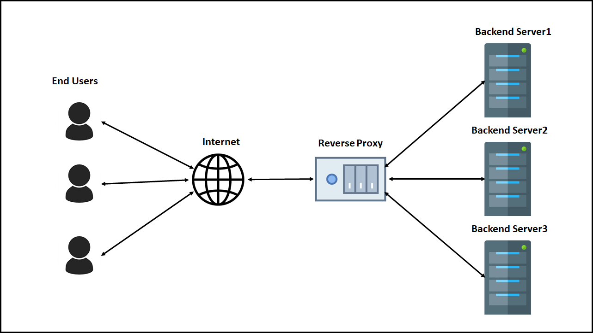

In dieser Single Kurs Web App wird Apache 2 verwendet, um Benutzeranfragen aus dem Internet zu verarbeiten. Apache 2 fungiert dabei als Reverse-Proxy, um die Benutzer an den richtigen Server weiterzuleiten. Folgende Abbildung veranschaulicht den Ablauf der Anfragen.
In diesem Abschnitt lernen Sie, wie Sie einen Apache Webserver einrichten. Dieser Webserver wird auf dem Manager Node erstellt, wo die Single Kurs Web App gehostet wird. Stellen Sie sich vor, ein Student öffnet die Webseite und möchte direkt mit dem Kurs beginnen. Apache 2 leitet den Student an den richtigen Service weiter. Dieses Abschnitt wird Ihnen Schritt für Schritt erläutern, wie Sie Apache2 konfigurieren.